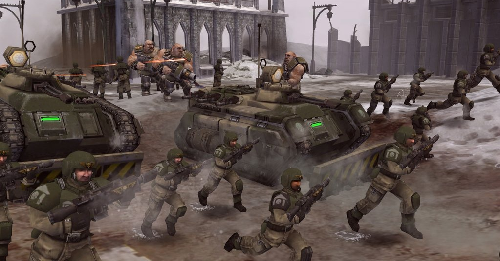
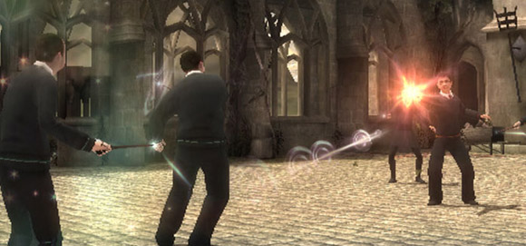
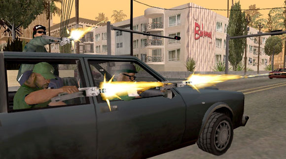
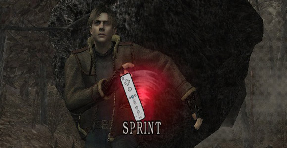

Vilain Game Designer ! Pas de biscuit pour toi ! IX
L'article original est écrit par Ernest Adams publié par Gamasutra (octobre 2008).
L'auteur original n'est en aucun cas reponsable de la précision de cette traduction.
Quand j'ai écrit le premier article de la série « Vilain Game Designer ! Pas de biscuit pour toi ! » il y a plus de dix ans, ce n'était rien de plus qu'une liste de choses qui m'agaçaient personnellement – sitôt publié, sitôt oublié. Je n'aurais jamais imaginé que mes lecteurs prendraient cela avec tant de sérieux et qu'ils seraient si motivés pour proposer leurs propres exemples.

Après l'article de l'année dernière, j'ai reçu un paquet de nouvelles suggestions de joueurs et de développeurs frustrés. Voici donc neuf nouvelles TDC [NDT : Twinkie Denial Conditions, littéralement « condition pour refuser un biscuit », à savoir à un game designer qui a mal fait son travail] pour cette neuvième édition de la série « Vilain Game Designer ! Pas de biscuit pour toi » !
Conditions de victoire et de défaite mal expliquées.
L'un des pires. À moins que le jeu soit de type bac à sable comme Les Sims, le joueur doit savoir ce qu'il doit faire – la condition de victoire – et, plus important encore, ce qu'il doit éviter de faire – la condition de défaite.
Tim Elder de Blue Alto nous écrit :
Je faisais les missions solo de l'extension Winter Assault de Dawn of War quand je suis tombé sur une mission Eldar qui consistait à faire sauter un générateur d'énergie orc pour semer la confusion. La première fois que j'ai fait cette mission, j'ai lu le briefing qui disait que nous n'avions pas assez de troupes pour lancer un assaut, il nous fallait donc détruire le générateur pour attirer les orcs afin de pouvoir les encercler.
Mes troupes s'approchent du générateur, tuent les quelques Orcs qui le gardent et soudain, l'écran s'estompe et un message apparait : « Vous avez échoué. ». Hein ? Mais pourquoi ?
Il a essayé autre chose, et il a eu le même résultat. Encore et encore.
Après avoir chargé et rechargé la partie, je n'ai pas réussi à comprendre pourquoi j'échouais, même après avoir détruit ce fichu générateur. Les conditions de victoire et de défaite doivent impérativement être bien précisées de façon à ce que le joueur sache ce qu'il doit faire et ce qu'il doit éviter de faire.
Et il a parfaitement raison. C'est un des principes les plus élémentaires du game design. Vilain game designer, pas de biscuit pour toi !
Les démos en temps limité.
La plupart des TDC dont j'ai parlé jusqu'ici sont dues à un mauvais gameplay, à de mauvais contrôles, à un mauvais équilibrage ou à un mauvais contenu. Celle-ci est plutôt inhabituelle – ce serait d'ailleurs plus une mauvaise décision marketing qu'un problème de conception. Rob Allen nous écrit :
Prenez la démo de Harry Potter et l'Ordre du Phénix par exemple. J'étais en train d'admirer le bel environnement graphique de l'école quand, ô surprise, « Il vous reste une minute ». Je me suis précipité un peu partout pour trouver ce que je devais faire et j'ai eu de nouveau un message me disant d'acheter le jeu. Pourquoi est-ce que j'aurais envie de l'acheter, après ça ?

J'ai été tout simplement énervé qu'on imagine que je veuille ce jeu à tel point que je sois prêt à consommer toute ma bande passante pour juste voir l'écran-titre, ce qui me ferait acheter le jeu… Et ne me lancez pas sur le mini-jeu inutile que je ne peux même pas finir en moins de dix minutes.
Maintenant, vous allez me dire : « Tu ne peux pas te plaindre de quelque chose de gratuit. ». Sauf que je ne suis pas d'accord. Beaucoup de jeux web sont gratuits ; ce n'est pas une raison pour proposer une mauvaise expérience de jeu. Et Rob a raison au sujet de la bande passante. Alors que Comcast [NDT : le premier opérateur téléphonique aux États-Unis] vient d'annoncer la mise en place d'une limite stricte sur les transferts de données des utilisateurs, nous devons réfléchir à combien de gigaoctets de démos nous sommes prêt à télécharger. Si télécharger des démos consomme notre allocation de téléchargement, celles-ci ne sont alors plus gratuites.
De toute façon, nous savons déjà que la démo sera limitée – il n'y aura qu'une partie du contenu et une partie du gameplay. Pourquoi nous forcer à quitter le jeu après un temps limite imposé ? Plus on joue, plus on s'intéresse au contenu et plus on en veut. Prenez Doom en comparaison. Il offrait les dix premiers niveaux, que vous pouviez parcourir autant de fois que vous le vouliez.
C'était une idée de génie et ça leur a rapporté une fortune. Imaginez si la démo de Doom s'arrêtait en plein milieu du premier niveau avec un message disant : « Temps écoulé. Achetez le jeu ». Les joueurs auraient arraché la disquette du lecteur et l'aurait brûlée. Les ventes auraient été bien moins élevées.
Reskins pas chers (alias les jeux à l'emporte-pièce).
Patrick Perrault de Airborne Entertainment nous écrit :
C'est une pratique courante dans le monde du mobile (i.e. les jeux sur téléphone portable) de prendre un moteur existant (ou un jeu entier) et de le réutiliser pour faire un autre jeu, généralement de marque.
Bien que certaines entreprises (comme Gameloft avec des jeux comme Splinter Cell, Prince of Persia, et autres jeux de plates-formes) fassent du bon travail et ajoutent de nouvelles fonctionnalités à chaque version, d'autres éditeurs se contentent de proposer de nouveaux graphismes et de modifier les niveaux. Certains éditeurs vraiment, vraiment cupides changent simplement le titre du jeu et l'écran de démarrage.
Mais quitte à être cupide, soyez au moins intelligent ! Si vous reskinnez un jeu, assurez-vous de supprimer le titre du jeu dans les crédits. Et assurez-vous également que les personnages du jeu d'origine n'apparaissent pas dans le nouveau jeu. Si vous ne faites pas les choses avec suffisamment d'intelligence, les joueurs n'achèteront plus vos jeux.
Conserver les anciens personnages et les crédits de l'ancien dans le nouveau est l'une des erreurs les plus drôles dont j'ai entendu parler. Impossible de faire un travail plus bâclé. Hélas, si seulement ce problème était nouveau.
Au début des années 90, certaines entreprises étaient tristement célèbres pour créer des jeux à l'emporte-pièce sur la Genesis et la SNES. Et de nos jours, on ne les retrouve pas seulement dans les espaces mobiles : il y a plein de cloneurs qui rôdent. Je pense que les FPS sont les side-scrollers de cette génération : ils sont beaucoup trop nombreux.
L'ordinateur plante pendant une sauvegarde ? Game Over !
Une personne du nom d'Ilya nous écrit :
Si le jeu plante pendant la sauvegarde, celle-ci est corrompue. Pourquoi ne pas sauvegarder un fichier avec pour extension .sa2 s'il y en a déjà une avec un .sav, pour ensuite effacer le .sav une fois la sauvegarde effectuée ?
Ilya a raison – on apprend ça en première année d'informatique. À moins que l'espace de stockage soit limité, la précaution de base est de ne pas écraser les anciennes données d'un fichier tant que les nouvelles données n'ont pas été sauvegardées en toute sécurité. S'il y a effectivement une pénurie de mémoire, vous pouvez avertir le joueur que son ancienne sauvegarde sera écrasée – en n'oubliant pas la petite case à cocher « Ne plus afficher cet avertissement », bien sûr. Programmer ceci est élémentaire, donc faites-le bien.
Des PNJ alliés qui font plus de mal que de bien.
Je me suis souvent plaint de l'IA stupide des pilotes alliés dans les Flight Simulators : ils sont censés surveiller vos arrières, mais ils se font tuer dans les dix premières secondes de jeu. Steven Taylor nous fait remarquer que ce cas se généralise aux missions d'escorte dans laquelle le PNJ que vous escortez est un idiot. En fait, je pense que ceci s'applique à n'importe quel PNJ allié. Il nous écrit :
Si le PNJ escorté suivait simplement le héros, ou se planquait dans un coin, ce ne serait pas un problème. Mais au lieu de ça, le PNJ escorté fonce dans tous les sens de sorte que le joueur perd le contrôle de la situation et se retrouve à devoir réagir aux mouvements absurdes du PNJ. Toutes les tactiques d'approche sont foutues en l'air quand le PNJ escorté se précipite vers la plus proche source de coups de feu.
Indépendamment, Shawn Lucas nous offre un bon exemple tiré de The Elder Scrolls IV: Oblivion :
Je me souviens d'une quête où le joueur devait sauver une jeune paysanne kidnappée par les membres d'une secte. Après avoir trouvé leur cachette et libéré la fille de sa cellule, j'ai voulu m'enfuir avec la prisonnière. Cependant, il semblerait que la fille avait plus envie d'attaquer les membres de la secte plutôt que de sauver sa peau. À la seconde où elle en a repéré un, elle l'a attaqué, attirant au passage d'autres ennemis. À ce moment là, elle ne pouvait plus se défendre, et moi non plus. Après d'innombrables morts et tentatives, j'ai pu me débarrasser de chaque membre un par un, en utilisant des techniques à la limite du game breaking, mais ça m'a dégoûté de jouer à ce jeu.

Et il nous propose un autre exemple :
Il y a une mission dans Grand Theft Auto : San Andreas où le joueur doit poursuivre un train sur le côté en roulant sur une moto-cross, sous le feu des ennemis qui se trouvent dans le train. Le joueur conduit la moto-cross pendant que le PNJ, assis derrière lui doit tirer sur les ennemis. Cependant, le PNJ choisit souvent de ne pas tirer sur les ennemis, même si la vue est dégagée. Qui plus est, la mission est en temps limité, ce qui aggrave encore la situation.
On voit de temps en temps ce genre de scène humoristique dans les films, où le héros se retrouve coincé avec un allié qui est plus un poids qu'autre chose (l'acolyte d'Indiana Jones, Wilhelmina "Willy" Scott dans Indiana Jones et le Temple maudit en est un bon exemple). Mais un film c'est différent d'un jeu vidéo – le héros va de l'avant quoi qu'il arrive.
En tant que joueur, si je suis constamment ralenti ou tué à cause d'un compagnon débile, je vais vraiment être tenté de le tuer moi-même. Je déteste combattre des PNJ stupides (voir le TDC sur Les adversaires débiles), mais j'ai encore moins envie de coopérer avec eux et de devoir compenser leur nullité : ils sont censé être de mon côté. Si vous ne pouvez pas créer une IA intelligente pour un PNJ, rendez les au moins prudents et prévisibles.
Fausse interactivité.
Voici un autre TDC absolument catastrophique, dans un bon jeu qui plus est. Je laisse la parole à Jessica :
Ceci gâche à mes yeux la fin de Shadow of the Colossus – et on retrouve ça dans d'autres jeux également. Vous permettez aux joueurs de contrôler leur personnage pendant une séquence, mais peu importe ce qu'il fait, la séquence n'a qu'une seule issue. Comme la situation n'est pas claire, on est tenté de réessayer la séquence, mais ça donne le même résultat.
S'il n'y a qu'une seule issue, faites-en une cinématique. Si le joueur a le contrôle de son personnage, laissez-le faire une action qui lui permettra d'obtenir un résultat différent. Si ça fait partie du « style » du jeu de laisser le joueur « jouer » au sein de ce qui sont essentiellement des cinématiques, alors ça devrait être le cas tout au long du jeu pour que le joueur le sache et ne se retrouve pas surpris à la fin du jeu.
John Funderburk ajoute :
J'ai aussi détesté les cinématiques « interactives » de Tomb Raider Legend et de Resident Evil 4. « Appuyez sur le bouton quand je vous le dirai » – c'est quoi ce jeu ?
Les gens jouent à des jeux pour réussir des défis, faire des choix intéressants, et de manière générale pour s'exprimer par eux-même. Les séquences de jeu qui ne fournissent aucune de ces expériences ne doivent pas être interactives. Quand nous avons le contrôle de l'avatar, nous espérons que ses actions auront une incidence sur l'univers du jeu d'une quelconque manière. Si elles n'affectent d'aucune manière l'univers du jeu, alors ça ne sert à rien de faire comme s'il y avait de l'interaction.
Une mise en garde, cependant – Il ne s'agit pas d'une attaque contre les jeux dont l'histoire est linéaire. Dans une histoire linéaire, le joueur surmonte des obstacles et est récompensé par la suite de l'histoire (généralement sous la forme d'une cut-scene), même s'il ne peut changer son déroulement. C'est tout à fait acceptable : surmonter un obstacle débloque la suite de l'histoire et le joueur sait comment ça fonctionne.

Le problème intervient quand on fait croire au joueur que ses actions ont de l'importance alors qu'elles n'en ont pas, du coup le joueur perd des heures et des heures à essayer. Si vous voulez écrire une histoire tragique – un héros condamné ou une cause désespérée – vous ne devez pas mentir au joueur en lui faisant croire qu'il peut échapper à son destin s'il fait suffisamment d'efforts.
Pour que la tragédie fonctionne vraiment, le public doit savoir à l'avance que le héros est condamné, ou du moins le réaliser sans devoir passer inutilement des heures à essayer de l'éviter. On peut toujours faire des jeux sur Napoléon, ou les Américains pendant la guerre du Vietnam, même si le joueur sait que le jeu se finira par un échec.
Mauvaise conversion entre manette et souris/clavier
Il s'agit d'une erreur classique et une fois de plus, de façon surprenante, les développeurs continuent à la faire. Jacek Wesolowski nous écrit :
L'un des éléments qui gâche mon plaisir de jeu, c'est que certains développeurs traitent la souris et le clavier comme des outils secondaires. La différence entre ces outils et une manette est significative, parce que leurs modes d'utilisation sont différents.
Par exemple, le clavier est mieux adapté pour les interfaces « étendues », où on assigne une touche à chaque action, tandis que les manettes reposent sur une utilisation « en profondeur » de l'interface : on utilise des combinaisons ou des suites de touches. Une simple correspondance bouton/touche est souvent insuffisante. Mais c'est exactement ce que la plupart des développeurs font.
Assassin's Creed en est un bon exemple. Les contrôles sont plutôt bien adaptés à la manette, mais les contrôles au clavier et à la souris sont peu maniables et contre-intuitifs. Pire encore, les développeurs ont imposé une limite arbitraire et très sévère sur la sensibilité de la souris, probablement pour qu'elle corresponde à la vitesse maximale de rotation à la manette. Au niveau du gameplay, ça n'a pas de sens puisqu'on peut faire un demi-tour instantané sans problème. En d'autre termes, une très forte sensibilité à la souris ne me donnera aucun avantage réel, si ce n'est de pouvoir jouer confortablement. Pendant le jeu, j'ai l'impression que ma configuration préférée a été délibérément sabotée.
Jacek a mis le doigt sur l'une des raisons qui font que je préfère jouer sur PC que sur console : je ne suis pas très à l'aise pour faire des combos et je préfère avoir une touche pour chaque action différente (ou encore mieux, un bouton intelligent qui fait ce que je veux selon les circonstances). Mes préférences ne suffisent pas à définir un TDC. Mais une mauvaise adaptation des commandes, si.
Ce qui fonctionne bien avec la souris fonctionne mal avec un joystick, et inversement, ce qui fonctionne bien avec le joystick fonctionne mal avec la souris. Ils ne servent pas aux mêmes choses. Une souris permet de diriger un pointeur. Un joystick est un dispositif de pilotage.
Une souris ne revient pas automatiquement au milieu de l'écran contrairement au joystick, et le joystick ne peut pas tourner constamment dans la même direction contrairement à la souris. Si vous comptez créer un système qui gère les deux à la fois, ne privilégiez pas l'un au détriment de l'autre. Concevez chaque interface utilisateur séparément comme si c'était le seul périphérique d'entrée au monde, et configurez les aussi bien que vous le pouvez.
Si vous constatez que le jeu au joystick offre un avantage par rapport à la souris ou inversement, ne résolvez pas le problème en sabotant le système de contrôle ! Créez un système de handicap qui permettra aux joueurs de régler le problème par eux-mêmes. Ça marche pour le golf : je ne vois aucune raison pour que ça ne marche pas dans les jeux vidéo.
D'un autre côté, selon le principe du « Faites le bien ou ne le faites pas », laissez tomber le support pour lequel vous n'êtes pas capable d'adapter le jeu. C'est mieux que de vendre au joueur une expérience de jeu inférieure.
Préparer le joueur à échouer.
Un dénommé « One Man Science Team » nous écrit :
Un défaut de conception qui, à mon avis, appelle sans ambigüité un TDC : les level designers exigent sans raison valable que le joueur brise délibérément les règles de jeu précédemment établies pour atteindre son but. Ça arrive même dans de « bons » jeux : pour trouver tous les secret du Donkey Kong Country original, vous devez essayer de sauter dans tous les trous dans chaque niveau.
Vous tomberez très souvent sur un Game Over si vous ne lisez pas d'abord la solution du jeu. Un autre exemple qu'on retrouve dans beaucoup de RPG, ce sont ces batailles impossibles à remporter où le joueur est puni s'il essaye de gagner — à travers le gaspillage des objets de guérison — et il est récompensé s'il perd, parce que c'est là que l'histoire veut l'amener.
Il poursuit en expliquant que ce n'est pas un problème si les level designers changent les règles de temps en temps, mais ils doivent laisser des indices qui le montrent, des indications visuelles pour montrer que les choses sont différentes.
Mais si réussir un objectif que le développeur a prévu de faire faire au joueur (trouver tous les secrets) implique de violer les règles du jeu que le concepteur a mises en avant (alors que le joueur a été continuellement puni pour ça !), alors la confiance qui existe entre le joueur et le développeur s’effrite.
Oui, c'est vrai. Contrairement aux jeux de société, les joueurs de jeux vidéo ne connaissent pas les règles quand ils commencent – ils doivent apprendre au fur et à mesure, et cela signifie qu'ils doivent pouvoir faire confiance aux développeurs.
Votre unique sauvegarde mène directement à votre mort
Terminons sur un problème simple. Nathan Sturtevant enseigne l'informatique à l'université d'Alberta, et il nous écrit:
Ce qui me gène dans la plupart des jeux où on peut sauvegarder, c'est qu'on vous permet de sauvegarder au moment de votre mort. La dernière fois que j'ai vu ça, c'était dans NeverWinter Nights, mais ça m'est arrivé aussi dans d'autres jeux. Dans NeverWinter Nights, ça arrive pendant les batailles, ou même si vous êtes sur le point de marcher sur un piège. C'est assez frustrant de découvrir que vous vous faites irrémédiablement tué 0,2 millisecondes après avoir chargé une partie.
Ça m'est arrivé aussi. Je crois qu'on doit laisser le joueur sauvegarder sa partie quand il veut et il peut être difficile pour l'ordinateur de prévoir une mort inévitable si le joueur n'a plus que quelques points de vie (il ne devrait pas autoriser la sauvegarde s'il est déjà mort.)
Mais j'estime aussi qu'on doit laisser le joueur faire plusieurs sauvegardes. Bon d'accord, le joueur a sauvegardé juste avant une mort inévitable – dans ce cas, laissez-le recharger une partie plus ancienne. Problème réglé. Si vous n'avez de la place que pour une seule sauvegarde, une solution consiste à mettre des checkpoints – assurez-vous qu'ils soient placés de sorte que le joueur soit en parfaite santé quand la sauvegarde se fait.
Conclusion
C'est tout pour cette année. Je suis toujours intéressé par vos suggestions, bien que je n'aie pas été très réactif pour répondre aux gens et pour les remercier. Je promet de faire mieux cette année !
En attendant, si vous trouvez un TDC vraiment flagrant, jetez un œil à la No Twinkie Database [NDT : pour les versions françaises, regardez le tag « Pas de biscuit » sur le site] pour voir si j'en ai déjà parlé. Si ce n'est pas le cas, n'hésitez pas à m'envoyer un mail à l'adresse notwinkie@designersnotebook.com [NDT : en anglais !].
Ajouter un commentaire
Commentaires

Je suis toujours un peu mitigé quand je lis cette rubrique, parce qu'elle contient souvent des choses qui n'ont pas trait au game design à proprement parler (ici, les sauvegardes et les backups), ou qui sont trop naïves/évidentes (par exemple "une pièce qui a subi une explosion devrait avoir l'air totalement dévastée"… ok, j'entends bien, mais c'est moins du game design que de l'art modulo la techno).
Concernant la fausse interactivité, et pour autant que je sois un féroce détracteur des QTE (j'attends encore de voir un jeu avec des QTE vraiment bien faits, plaisants et non arbitraires), j'apporterais tout de même un bémol à la critique. Il faut distinguer une fausse interactivité totalement arbitraire et réellement inutile (par exemple la séquence en moto dans Beyond Two Souls : on peut suivre la route, mais même si on se contente d'accélérer sans tourner, la moto suit les virages comme si on n'était pas là), et un retrait délibéré de maîtrise des événements au joueur, qui peut être un parti-pris fort et pertinent.
Attention, spoilers sur Red Dead Redemption !! (ça commence à la troisième ligne)
lkqjsdhf lqksjdfhlksjdfhqlskjdfh lqk lqkdjhf qlskdjfh qpzeufy hzuhfljkdhf qlsdkj fhlsdkjfh lksjfh lsdkjfhqlkfjhezphf mlkf msdlkfj qmsldfkj qmsdlkfj qjksd fqskmdjf hljkdfhqlsdkjf hlqsdkjfh qlsdkjfh qlsdkjfhqsldkjfhqlsdfkjh qslkj à la fin du jeu, lorsque John sort de la grange et constate que le FBI est en embuscade, il sait très bien qu'il n'a aucune chance. Le jeu aurait pu simplement passer directement à une cinématique montrant les agents en train de le cribler de balles sans laisser une chance au joueur de se défendre. Après tout, ça revient au même. Mais c'est précisément très intéressant de laisser une dernière fois au joueur la main sur les événements, même s'il ne pourra faire aucune différence. Il se retrouve, comme le héros, dans une situation de désespoir total et à tenter, vainement, de faire une différence. lkjqsmdfkljfmlksdjf mlkdsjf mqlksdfjmqlk jmsldkfj mpaozuif mlkjfmlsdqkj f qsm flkjmsdlfkj qmsdflkjq smdflkjqmdflkj q lskjfmsldkjf mqlsdkfj qmsdlkfj qmsoeiuf melfijmdlkfj mdslkfj qmsdlkfj
FIN DU SPOILER
La perte de réelle interactivité (le joueur a la main techniquement mais ses performances ne feront aucune différence) se retrouve aussi, finalement, quand le joueur est doté d'une puissance phénoménale à la toute fin du jeu : il n'est alors plus question d'affronter un challenge — devenu trivial, mais de jouir d'une pleine puissance libératrice et régressive. C'est ce qui se passe à la fin de Soul Reaver 2 (ce n'est pas un gros spoil hein), où Raziel est pour ainsi dire invincible pendant les derniers boss (l'identité de ces boss serait en revanche un spoil :)). Le combat fait alors plus partie de la narration que du gameplay, mais n'en reste pas moins jouissif.
Il faut donc se garder de mettre QTE et parti-pris de perte d'interactivité dans le même sac, et de condamner ce dernier procédé qui tient plus de la narration que du gameplay. Le jeu vidéo a ceci d'unique qu'il permet une interaction du joueur avec la narration, voire une maîtrise partielle de celle-ci. Laisser le joueur avoir l'impression qu'il a une chance d'influer sur certains événements peut être vu comme maladroit lorsque c'est mal fait, mais lorsque c'est bien fait, ça renforce le sentiment d'impuissance (ou de puissance) et ça contribue donc à la force narrative.

Une nouvelle fois : excellent ! Merci. Mais pour les QTE ? Personne n'aime ça et pourtant, on en voit dans tous les jeux de notre époque un peu "action". Pourquoi ? Pourquoi tant d'acharnement à rendre une cinématique pénible ?